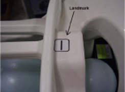

Operating Documentation
Direction 5670000, Rev# 1
Optima MR450w 1.5T Service Methods
Module Version 8.0, Version Date 10/6/09
Operating Documentation |
| Required Persons | Preliminary Reqs | Procedure | Finalization |
|---|---|---|---|
| 1 | Not Applicable | 25 mins | Not Applicable |
Follow this process to prepare for the automated SNR Test using the 1.5T 8-Channel Neurovascular Array Coil by Invivo (M3335M).
| NOTE: | Coils do not ship with phantoms. Phantoms come in a unified phantom set with the MR system. |
| Item | Qty | Effectivity | Part# | Manufacturer | |
|---|---|---|---|---|---|
| Large Cylindrical Unified Phantom | 1 | Unified Phantom Set | 5342679 | - | |
| 10 cm Spherical Unified Phantom | 1 | Unified Phantom Set | 46-317586G1 | - | |
| 17 cm TLT Spherical Unified Phantom | 1 | Unified Phantom Set | 46-265826G6 | - | |
| Unified Phantom Positioner | 1 | Unified Phantom Set | 5344806 | - | |
| Condition | Reference | Effectivity |
|---|---|---|
For Discovery MR450 and Optima MR450w, the following coil configuration names must be installed to run this tool: 8NVHEAD_A and 8NVARRAY_A. For HDx, HDxt, and HDe, the following coil configuration names must be installed to run this tool: 8NVHEAD_A and 8NVARRAY_A. | - | - |
Place the base of the NV array coil on the patient table and latch it to the table as shown in Illustration 1.
Illustration 1: NV Array Coil on Patient Table

Place the phantom positioner in the coil as shown in Illustration 2.
Illustration 2: Phantom Positioner in the Coi

Place the phantoms in the positioner as shown in Illustration 3.
Illustration 3: Phantoms in the Positioner

Carefully align the connector pins on the base of the coil with the top part of the coil and then latch both the coil sections into place as in Illustration 4. (The scanner will not operate if the coil sections are not latched correctly).
Illustration 4: Connector Pins Aligned on Base of Coil

Connect the coil to Port A of the system LPCA. Landmark the coil at the cross mark as shown in Illustration 5 and advance to scan.
Illustration 5: Landmark the Coil

Run the Multi-Coil Quality Assurance (MCQA) Tool with the Unified Phantom Set.
No finalization steps.